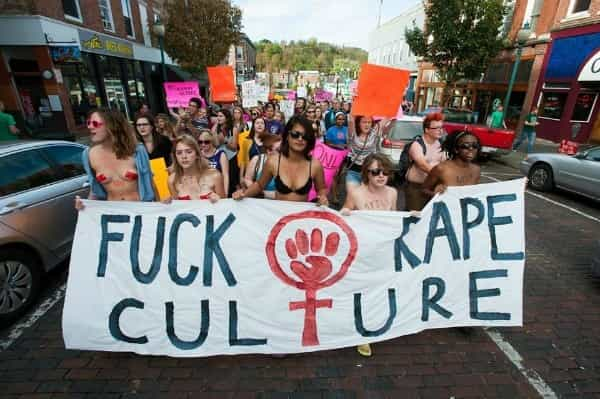

Daryush "Roosh" Valizadeh created ROK in October 2012. You can visit his blog at RooshV.com or follow him on Twitter and Facebook.


President Trump, now that you are firmly in power and have vigorously begun fulfilling your campaign promises, I expect you to have extra time to fix other problems that weren’t at the forefront of your election campaign, particularly ones that resulted from a society that has normalized hatred of men and masculinity.
Sadly, the average man today is looked upon with contempt and the source of all problems that women complain about (both real and imagined), even though they are the most privileged class of female that exists in the world today. As you already know, once a woman successfully nags you into correcting what she perceives as a problem, she immediately begins work on correcting another, and then another, until you wake up to find yourself completely submissive to a woman whose behavior now matches that of a radical Islamic terrorist. Thanks to the leftist pet causes of feminism and social justice, which were enabled by the globalists who sought to defeat you, the matriarchal reign of terror has culminated with all men presumed to be rapists and oppressors, and who need to be “taught” how not to abuse women, as if it’s a natural-born instinct of ours like eating or sleeping.

Once the culture has accepted the lie that all living men are active oppressors, it was easy to push other lies that men are unfairly stealing money from women by earning more than them for the same labor. The next step in correcting this “wrong” is for women who are less skilled than men to get hired and promoted over men. Relentless propaganda in the media and academia has so infected the workforce and female-dominated Human Resources departments that a productive man is one bogus accusation away from destitution. If his workplace has at least one woman, he can no longer share his opinions without fear of causing offense and getting fired.
The situation is even worse outside of work. Unless a man is prepared to wear a bodycam 24 hours a day, he is at risk for false accusations of harassment or rape. It takes thousands of dollars to defend against such accusations within a culture that refuses to grasp the fact that women are highly eager to lie for personal or financial gain. So many men have dropped out from relationships, work, and even educating themselves in university, simply because they realize how badly the system is rigged against them. Men have become second class citizens, expected to bow down to women simply because they lack a vagina. While women shriek of their safe spaces, stocked with coloring books and crayons, men are subject to attack from any space they enter, because of laws and institutional rules that have been changed to their detriment.
But enough with the victimhood. Men have pride, and even when we are wronged, we don’t like to ask for help or say that we are being attacked. The men who follow me rather take it on the chin and solve their problems than complain about their plight, but we still can’t ignore the reality that relations between men and women are the worst it’s ever been thank to a multi-decade push by globalists to invert the natural order and lift women above men. We now live in a culture where women want to replace the role of men in employment, positions of power, and even within relationships as they gleefully brag about the “end of men” and how the world would just be better if we didn’t exist.

Authored by Jewish feminist Hanna Rosin
To solve this problem, we don’t need more regulations, policies, or even money. All that’s needed is for you to stop using Federal law and funding to feed feminist pigs so that nature can reassert itself. In other words, stop the government from acting as a daddy and husband to women.
Halt any program that performs a function that a father or husband could perform. This means no free money, no welfare, and no “reproductive health services.” Private charities can pick up the slack for widows and women who weren’t pleasing enough to land a husband. I also urge you to stop any program that attempts to turn women into men, such as university sports funding or scholarship programs that push unqualified women into science. As a masculine man yourself, do you see any point in having programs that encourage a woman to leech off of free help instead of falling into the arms of a man she must open her heart to in order to receive material benefits?
If you thought Hillary Clinton was a nasty woman, I wish you could see the attitude of a basic run-of-the-mill middle class American girl who knows that there will be no consequences for her actions because she will be saved by a culture that thinks she’s a victim and a government that actively competes with men to be her husband. It’s become so bad that there are now male movements which dedicate themselves to not interacting with women at all.
My vote for you was just one of many millions, so I hope I don’t sound too pushy, but as a man who has had a front-row seat in this horror show of cultural decline, I see in you someone who would genuinely care about how American men have been spit on by the elites, both economically and spiritually. Thankfully, even if you do nothing that I kindly suggest, your existence alone is a great help to men, who will now feel that it’s okay to proudly display their masculinity without feeling shame for having the natural urges to compete, achieve, conquer, and grow. Even the presence of your European wife may inspire women to rediscover their feminine instincts, of standing by their man as he climbs the ladder of success. If more American men are rewarded for emulating you, and more American women feel less of a need to attack men, we have already taken the first step to fixing the damage that has been brought through the deliberate globalist effort to divide and conquer us as a people.
At risk of getting too greedy, I make one more request. There is something going on in the environment where plastics and other industrial chemicals are lowering both testosterone and sperm counts. It’s turning men into women. It will be harder to make America great again if the men are weak, frail, and gay, so please get the FDA to commission animal studies that research the most common household plastics and their effects on the mammalian endocrine system. If the studies show a harmful effect, ban them. This will certainly cost large corporations billions of dollars, and may even hit the consumer in the pocketbook as well, but maintaining healthy testosterone among men is a matter of public health and state survival. If we ever want to wean ourselves off immigration, we need a sustainable population. This cannot be done if American men are practically infertile and racing to become cuckolds instead of fathers.
President Trump, I hope this letter shed light on the social and health problems that men are facing today. If you merely starve the feminist beast, allow men to be men, and ensure their bodies are not being poisoned by endocrine disruptors in the environment, you will aid in the revival of masculinity to the days of tradition when men were looked upon as leaders and husbands instead of oppressors and rapists. Whatever you choose, I will pray for you. May you have the strength and will to do what you know in your heart is right.
This article was originally published on Roosh V.
Read More: The Path Men Took To Trump